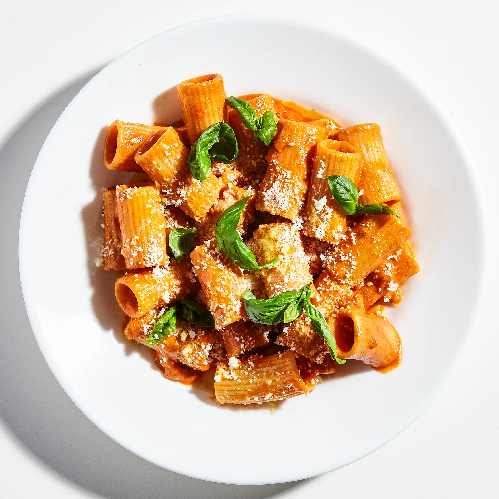

Vodka Rigatoni
Ingredients
- 500g box rigatoni
- 100g shallots
- 4 garlic cloves
- 2 tbsp butter / olive oil
- 1/2 tsp chili flakes
- 30ml vodka
- 3/4 cup cream
- 100g tomato paste
- Salt to taste
- Parmesan cheese to taste
- (Optional) Fresh basil to serve
Directions
- Bring a large pot of salted water to a boil. Cook rigatoni until al dente.
- Finely dice shallots and crush garlic cloves.
- Heat butter or oil over medium heat. Add shallots and garlic, cooking until starting to brown.
- Add tomato paste and chili flakes and stir until shallots are coated. Continue cooking and stirring until browning on bottom of pan.
- Add vodka to deglaze pan. Reduce heat to low.
- Add 1/4 cup pasta water and heavy cream to pan. Add more pasta water or cream to taste.
- Remove sauce from heat and fold in rigatoni.
- Add parmesan to taste and fold with rigatoni in the sauce.
- Serve with extra parmesan to taste. Optionally also serve with fresh basil leaves.
View other recipes
